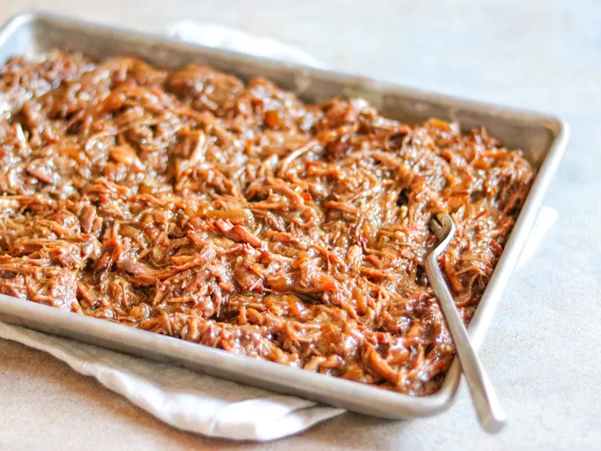

Georgia Pot Roast

The most delicious pot roast you will EVER eat! Made with just five simple ingredients and slow cooked in the crockpot, you are going to fall in love with this!
Ingredients:
- 1 1/2 to 3 pounds beef chuck roast
- 1 (1 ounce) packet au jus gravy
- 1 (1 ounce) packet ranch seasoning
- 1 (16 ounce) jar pickled onions, such as Mt. Olive Simply Vidalia Pickled Vidalia® Onion Strips
- 4 cups low sodium beef stock, or as needed
- 1 tablespoon butter, at room temperature
- 1 tablespoon all-purpose flour
Recipe instructions:
- Add chuck roast to a slow cooker (no need to sear it first). Sprinkle roast with au jus packet, ranch seasoning packet. Pour pickled onions over roast.
- Cover the slow cooker; cook on High for 4 to 6 hours, or on Low 6 to 8 hours.
- Halfway through the cooking process, if you need to add some liquid, add beef stock as needed.
- When the roast is impossibly tender and falling apart, remove to shred. Return shredded beef to the liquid.
- In a bowl, mash butter with flour to make a paste; stir butter mixture into beef and liquid to thicken gravy. Continue to cook for 30 minutes, uncovered.